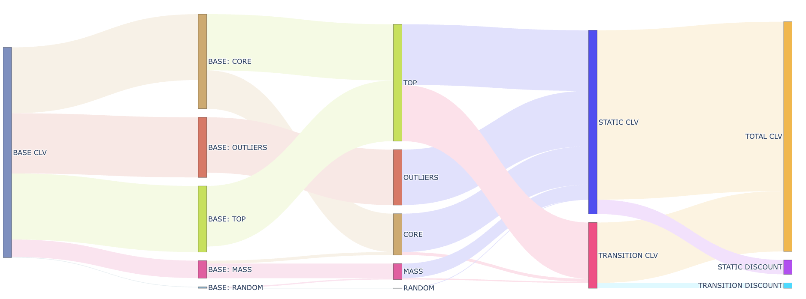

Customer Segmentation Analysis
Highlights
- Applied RFM Clustering to segment customers into 5 distinct behavioral groups based on Recency, Frequency, and Monetary value
- Used Survival Analysis to determine churn days and classify customers into lifecycle stages: NEW, ACTIVE, DORMANT, CHURN
- Implemented Buy 'Til You Die (BTYD) model to forecast Customer Lifetime Value (CLV) with and without CRM intervention, guiding optimized promotion strategies

Customer Lifespan Estimation Through Survival Analysis

Customer CLV Transition with CRM Program by the BTYD Model